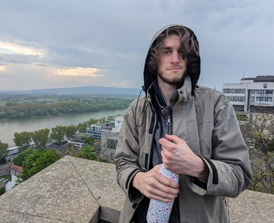

Marco Stixenberger
About Me
Hello, I'm Marco and I'm interested in almost everything. Strong passion for DIY stuff.
Skills
Analytical thinking and problem-solving skills
Experiment design and -tracking
Automating the boring stuff
Python programming with a special interest in computer vision and environmental monitoring applications
Basics in C programming
Electronics, with a special interest in LED illumination
Linux as daily driver
Raspberry Pi / Arduino for automation, experiment tracking and hardware control
FDM 3D printing, some experience with Laser engraving
Explaining technical stuff to non-technical people
Work Experience
Viewpointsystem, Test Engineer, 2021-present
Bosch Engineering, Intern in automotive software engineering, 2018-2019
Education
Dipl. Ing. in Physical Energy- and Measurement Engineering, Technical University of Vienna, 2018-2022
BSc in Technical Physics, Technical University of Vienna, 2012-2018
Interests
Applying automation to everyday life
Photography and cameras in general - I am fascinated by cameras as scientific instruments
Robotics
Computers and their application as scientific instruments
Gardening, especially growing hot chilis
Astronomy and astrophotography
Growing a money mustache
Outdoor activities: mountain hiking, camping, archery
Longevity, staying fit and increasing total healthspan
Tinkering with self-built small CNC machines
Distro hopping
Scientific breakthroughs and futurism in general
What I Want to Learn More About
Cinematography
Hydroponic systems and how to use technology to automate agriculture
DIY solar power
A low-level programming language, potentially Rust
PCB design
Woodworking